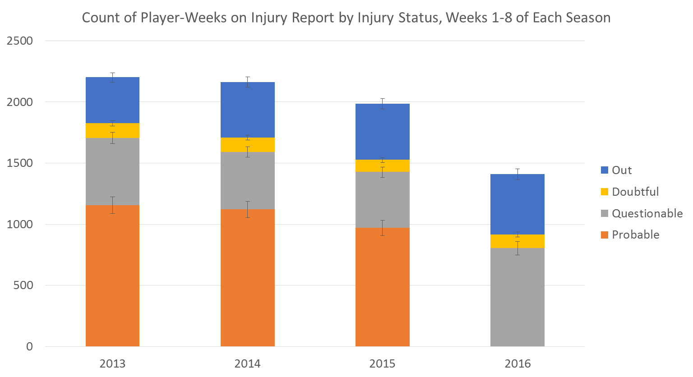
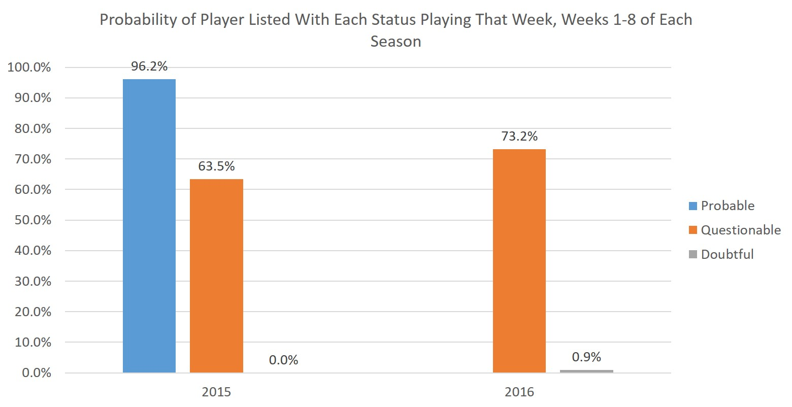

The Effects of Eliminating ‘Probable’ from the NFL Injury Report
Less than a month before the season began, the NFL announced a few substantial changes to how it handled injuries. The biggest one – at least from a fan(tasy football) perspective – was a modification to the game status report component of the NFL injury report: eliminating the “Probable” designation for how likely players are to play in their upcoming game.1
I wasn’t sure how this change would affect NFL injury reports, so I’ve been eagerly waiting to amass enough data to examine this rule change. Now that we’ve got a half season let’s take a look at the data!
An Injury Report Intro

To start, though, let me make sure everyone is on the same page about a few intricacies of the NFL’s injury report. The “NFL Injury Report” is actually three separate documents:
Practice Reports – these are reports given by teams on Wednesday, Thursday, and Friday (for teams with Sunday games)2 that lists the practice status of all players with “significant or noteworthy injuries.” This language does give teams some wiggle room on exactly whom they put on their reports. Some teams, but not all (as far as I can tell), even regularly list players (mostly veterans) who just miss a practice for scheduled rest. Each injured player gets one of the following designations each day:
- Did Not Participate
- Limited Participation
- Full Participation
You could previously also have been listed as “Out,” but that was also eliminated in 2016 to avoid confusion with the Game Status Report.
Game Status Reports – these are reports given by teams on Friday for Sunday games (or Wednesday/Saturday for Thursday/Monday games). They list a projection for how likely an injured player is to play in the team’s upcoming game. Of note, a player listed on the practice report does not have to appear on the game status report if they are certain to play. The game status designations are:
- Questionable
- Doubtful
- Out
As noted above, through 2015 “Probable” was a fourth option, but the NFL eliminated that this year.
In-Game Injury Report – exactly what it sounds like. We won’t waste more time on it here as it’s not pertinent to our questions.
Impact of Change: There were a lot of prognostications about the effects of this change. I was…uncertain. The players previously named as “Probable” could have followed one of two paths: “Questionable” or off the game status report entirely.
Path 1: The new rule could result in a lot more “Questionable” tags, since the NFL can get a bit investigate-y if a player not on the game status report unexpectedly doesn’t play.
Path 2: On the other hand, 90% or more of players marked “Probable” in a given week did in fact play in the team’s next game, so maybe they’d fall off the injury report entirely without a “Probable” designation.
I really wasn’t sure what to expect, and I thought different teams would probably take different tacks. (Unfortunately, I don’t think we have enough data to stratify by teams yet).
Data Sources
I scraped injury report information from Fox Sports weekly pages like this one for the first 8 weeks of the 2013-2016 seasons.3 In addition to the Questionable/Doubtful/Out designations we would expect, Fox has a “Day-to-Day” listing which, from cross-referencing with other sources, appears to be a weird mix of “not badly hurt enough to appear on the game status report” and “on injured reserve” (IR) (a special list that teams use to stash severely hurt players they would like to keep but not spend an active roster spot on). Because we just wanted to focus on the three categories for the game status report, I excluded all Day-to-Day and IR listings from my analysis.
I also wanted to calculate the percent of players with each designation who were active or inactive in a given week. The NFL has data on inactive players readily available for 2016, but historical inactive data is harder to come by. I settled on scraping the 2015 data from FFToolbox (for example, here). I did not pull data for 2013 or 2014. I know I’m breaking my own rule for not presenting data from only two years, but it will still provide an instructive comparison between the old and new injury reports, and I don’t think we’ve seen a lot of year-to-year variation in the inactive percentages of each designation.
Alright, Enough Already! What Happened with the 2016 Injury Reports?

Obviously the probable bar went to zero in 2016 as the designation was eliminated. In previous years, the total number of probable and questionable player-weeks was 1,706 (2013), 1,592 (2014), and 1,427 (2015). On average, these years saw 1,083 probable and 492 questionable player-weeks. In 2015 there were 970 probable and 457 questionable player-weeks.
In 2016, meanwhile, we saw just 805 questionable player-weeks. If we assume we would’ve seen the same data in 2016 as 2015 if “Probable” hadn’t been removed (likely not a perfectly reasonable assumption because of random variation from year to year), it looks like about 30-35% of “Probable” player-weeks went into the “Questionable” category and the remainder fell off the report. Neat.
As a sidenote, you might notice that the number of player-weeks on the game status reports shrank each year from 2013-2015, especially 2014-2015. It’s a bit hard to see in this graph, but I’ve also added 95% confidence limits to each category to help give us an idea of whether this is beyond the random year-to-year variation we might expect.4 The biggest decrease was a 12.5% drop in “Probable” designations from 2014-15. This might mark a trend of less reliance on the Probable category before this season, but I’m still inclined to say it’s random variation.
I was also curious whether there would also be a tendency to push everyone down the game status list (e.g. 2015 questionable becomes 2016 doubtful). Doubtful designations are basically unchanged while Out designations are up somewhat (377, 452, 459, and 493 player-weeks from 2013-2016) but 2016’s numbers are within the confidence intervals for 2014-15. That doesn’t provide much evidence for this kind of trend.
How Often do Questionable Players Play Now?
The official League definition of “Questionable” now is “uncertain that the player will play.” Well, that’s…vague. Previously the League said 75% of Probable, 50% of Questionable, and 25% of Doubtful players should play, but these percentages – which weren’t all that accurate, anyway, to be fair – are now gone. So what does Questionable mean in 2016?

Turns out a “Questionable” designation used to mean that, on average, you had about about a 60-65% chance of playing that week5, though this varies a lot by team. Now it means, on average, you have about a 73% chance of playing each week. That’s a substantial difference. Given the relative numbers of Probable and Questionable designations in the past few seasons, this is just a tick lower than what we’d expect to see if 30-35% of Probables were now Questionable – but that makes sense since many of the Probables who became Questionables were probably “more hurt” Probables (i.e. their risk of missing a game was likely above the overall Probable average).
Regardless, the Questionable designation was already a tough-to-predict hodgepodge before this year, and it’s only gotten more heterogeneous.
Conclusions and Next Steps
From the data so far, my best guess is about 30-35% of the player-weeks that would have previously been categorized as “Probable” went into the “Questionable” category and the remainder fell off the game status report. Furthermore, Questionable players now play closer to 75% of the time rather than the 55-65% we’ve seen historically.
There’s still a lot more we can do with this data! My next post, for example, will focus on whether, in this brave new world without a “Probable” category, we can differentiate between the “Questionable” players more and less likely to suit up on game day.
It would also be interesting to see how different teams are reacting differently to these changes (in 2015 teams ranged from 31-85% of their Questionable designations ultimately playing, and that may vary even more now), but I’d really like a full season before doing that stratification.
Footnotes
The NFL also eliminated the “Out” category from the practice status reports to avoid confusion with the game status reports. Additionally, they tweaked the rules for the injured reserve list: teams were previously allowed to recall one player from the list to the active roster each season, but they had to specify the player at the time they went on injured reserve. Now they can designate them for return when they actually want them back.↩︎
For Thursday games, these reports are issued Tuesday and Wednesday. For Monday games, Thursday, Friday, and Saturday.↩︎
I initially tried to pull data from Pro-Football-Reference (PFR) team pages (like this one) for 2009-2016. However, PFR’s injury data was a.) incomplete for 2016’s first 8 weeks and b.) looked a bit funky for 2014 and earlier. The data exhibited a huge sudden jump in overall player-weeks on the injury report between 2011 and 2012, which I’m concerned had to do with changes to PFR data collection/tracking procedures rather than a true change. Also, from 2009-2014 there are 50-100% more questionable than probable designations each year, which doesn’t seem right. There should be way more probable designations.↩︎
For the stats nerds, I considered each injury category as a count and calculated exact Poisson confidence intervals.↩︎
As noted above I didn’t pull similar data for 2013 and 2014, but cross-referencing with data at Football Outsiders (FO) and HSAC suggests that at least the Questionable and Probable percentages for 2015 were relatively in line with 2013 and 2014. The Questionable numbers from FO showed only 56% played in 2014, but that rebounded to the historical low-60s in 2015.↩︎